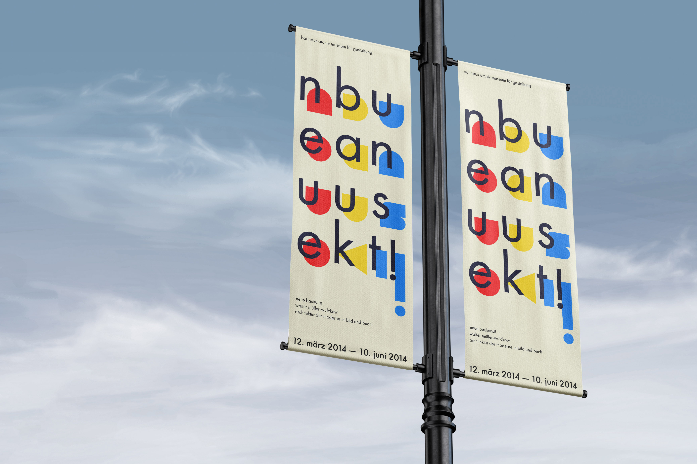

Bauhaus Archiv is a state archive and museum dedicated to the Bauhaus School with the goal of educating visitors on the history and impact of the movement. Highlights of their collection include furniture, architecture, and graphic arts. As part of a design course, our team was task with developing a visual identity for this client which included graphic assets and a microsite.
Role
UX Design, Graphic Design, Interaction Design
Tools
Adobe XD, Photoshop, InDesign
Team
Virginia Chu, Nicole Tam, Xiandong Lyu
Learning from Wim Crouwel
Through a deep study of Wim Crouwel and his works, we identified three qualities that set the precedent for art direction:
Abstract typography to increase readability
Large and simple negative space created through alignment
2D and 3D geometric art crafted based off a grid
Graphical Assets
Using these four qualities, we created a poster and banner meant to be seen on the streets that would entice people to visit the museum. Business cards were also created for the Bauhaus Archiv employees to give out to their clients.
final poster

final banner
final business cards
From Assets to Microsite
The intent behind the microsite was to intervene at the pre-purchase stage and help people look through and discover items in the collection. The content of the microsite was organized into collections of items created by the different individuals of the Bauhaus. This allows them to go from the overall collection to a more specific collection based on who they are interested in.
Reflection
This project taught me how core graphic design principles can be applied to creating digital user interfaces. On a more personal note, through studying Crouwel and trying to understand his decision making and graphic design tendencies, I learned more about how I like to approach design. From Crouwel, I’ve adopted a systematic approach to my design work.